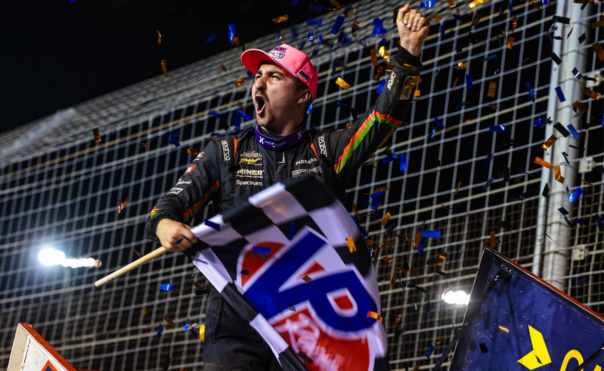

Giovanni Scelzi Wins Friday World Finals Feature at Charlotte
Giovanni Scelzi started second and led all 25 laps to win Friday’s NOS Energy Drink feature at the Dave Smith Motors World of Outlaws World Finals at The Dirt Track at Charlotte. Tanner Holmes finished second and Sheldon Haudenschild third.

Giovanni Scelzi won Friday’s 25-lap World of Outlaws NOS Energy Drink Sprint Car Series feature at The Dirt Track at Charlotte, leading every lap in the Spire Motorsports No. 77. Scelzi started on the front row and passed polesitter Sheldon Haudenschild on the opening lap. Tanner Holmes moved into second late in the race and closed on Scelzi but finished 0.384 seconds behind, according to official World of Outlaws results. Haudenschild finished third, followed by Cameron Smith and Buddy Schweibinz. The win paid $15,000.
Carson Macedo finished sixth from 10th, Michael “Buddy” Kofoid seventh from 13th, Tyler Courtney eighth, champion David Gravel ninth from 11th and Parker Price-Miller 10th. Thursday winner Rico Abreu finished 11th after starting 17th. Earlier in the program, heat races went to Bill Balog, Schweibinz, Haudenschild and Smith. Scelzi won the redraw, Haudenschild won the Toyota Dash and Steven Snyder Jr. won the Last Chance Showdown. Donny Schatz drove from 25th to 17th for the hard charger award, and Emerson Axsom was Rookie of the Race in 12th. Balog started fifth and finished 21st.
World of Outlaws said the win was Scelzi’s 11th career series victory, tying Fred Rahmer for 48th on the all-time list, and the first World of Outlaws win for Spire Motorsports, which added a sprint car program in 2026 with crew chief Eric Prutzman. Scelzi is the 24th different winner of the 2026 season, and the series said the single-season record for different winners could be tied Saturday. Holmes’ second place in the Buch Motorsports No. 13 was his best career World of Outlaws finish. Scelzi came to Charlotte off three straight wins in October, one at Lakeside Speedway and two at Texas Motor Speedway Dirt Track.
The program ran long after a delay for track work. “We’ve been here for nearly 12 hours,” Scelzi said in the World of Outlaws recap, adding that it had been seven years since his last win at Charlotte. The World Finals and the 2026 World of Outlaws season conclude Saturday, Nov. 7, with a $25,000-to-win feature at The Dirt Track at Charlotte.